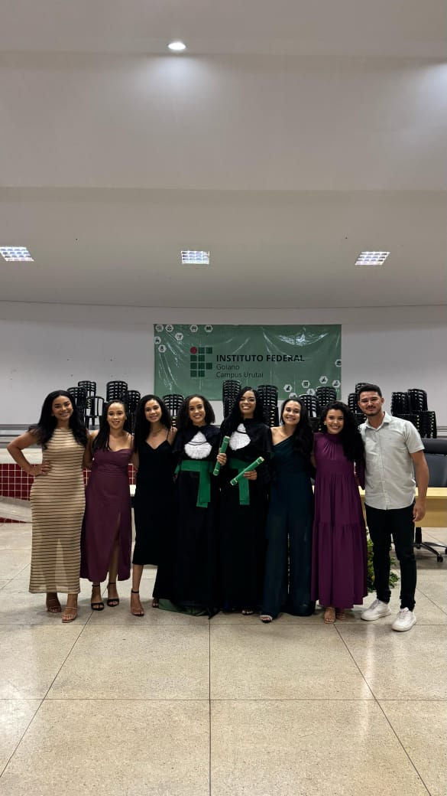
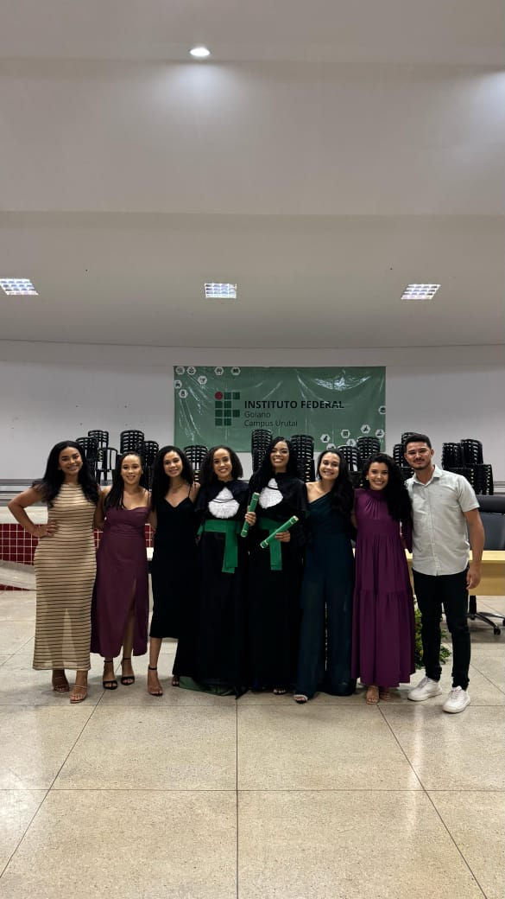

Filipe
Filipe é aquele amigo que transforma qualquer momento difícil em uma oportunidade de acolhimento e alegria — sempre presente, sempre disposto a ajudar, e com um senso de humor que arranca risadas mesmo nos dias mais complicados.
Nos conhecemos na faculdade e, desde então, ele se tornou um apoio fundamental, especialmente naqueles períodos em que enfrentei repetidas crises de ansiedade.
Com seu jeito leve, atencioso e amigo, ele sempre soube exatamente como me apoiar e me fazer sorrir quando eu mais precisava.
Ter o Filipe por perto é certeza de boas conversas, gargalhadas sinceras e aquele sentimento bom de saber que não estamos sozinhos.
Nossa amizade foi construída com afeto, parceria e cumplicidade — e eu amo demais tudo que criamos juntos.
Sou imensamente grato(a) e feliz por ter o Filipe na minha vida: amigo assim é presente raro e valioso!
Momentos com Nanda üì∏


 
